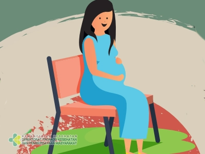

Tanda-Tanda Persalinan dan Tanda Bahaya Kehamilan
Menjelang persalinan, tubuh ibu memberi tanda-tanda yang perlu dikenali. Sebagian keluhan kehamilan bersifat wajar dan akan hilang sendiri, tetapi ada keadaan tertentu yang menjadi tanda bahaya dan memerlukan pertolongan tenaga kesehatan segera. Mengenali tanda-tanda ini membantu ibu dan keluarga mengambil keputusan dengan tepat.

Tanda-Tanda Persalinan
- Keluar cairan ketuban yang berwarna jernih kekuningan dari jalan lahir.
- Muncul rasa mulas yang teratur dan makin lama makin kuat.
- Merasa seperti mau buang air besar.
Persalinan sebaiknya ditolong oleh tenaga kesehatan (bidan atau dokter) di fasilitas kesehatan, karena menggunakan peralatan yang aman, bersih, dan steril sehingga menurunkan risiko infeksi.
Tanda Bahaya Persalinan
- Bayi tidak lahir dalam 12 jam sejak terasa mulas.
- Mengalami kejang-kejang.
- Air ketuban keluar dari jalan lahir sebelum terasa mulas.
- Air ketuban keruh dan berbau.
Bila ada tanda bahaya tersebut, ibu harus segera dibawa ke bidan atau dokter.
Tanda Bahaya pada Masa Kehamilan
- Perdarahan dari jalan lahir, walaupun hanya sedikit.
- Bengkak pada kaki, tangan, atau wajah yang disertai sakit kepala, nyeri ulu hati, kejang, atau pandangan kabur — kemungkinan pertanda pre-eklampsia.
- Sakit kepala hebat yang tidak membaik.
- Demam tinggi.
- Gerakan janin berkurang atau tidak terasa seperti biasanya.
Mengapa Persalinan Harus Ditolong Tenaga Kesehatan?
Persalinan yang ditolong tenaga kesehatan (bidan, dokter, atau tenaga medis lainnya) lebih terjamin keselamatannya karena penolong sudah ahli dan menggunakan peralatan yang aman, bersih, serta steril. Hal ini mencegah terjadinya infeksi dan bahaya kesehatan lain bagi ibu maupun bayi. Karena itu, ibu hamil dianjurkan merencanakan tempat persalinan dan menyiapkan transportasi serta pendonor darah sebagai langkah siaga.
Yang Perlu Dilakukan
Beberapa kehamilan memiliki risiko lebih tinggi dan perlu perhatian ekstra, misalnya yang terkait kondisi "4 terlalu dan 3 terlambat" (hamil terlalu muda, terlalu tua, terlalu banyak melahirkan, atau terlalu dekat jarak kehamilannya), anemia, dan tekanan darah tinggi. Ibu dengan kondisi seperti ini dianjurkan lebih sering memeriksakan kehamilan dan merencanakan persalinan di fasilitas kesehatan yang memadai.
Ibu hamil dianjurkan memeriksakan kehamilan secara rutin sesuai jadwal, membawa Buku KIA, dan memahami tanda bahaya bersama keluarga. Jika muncul salah satu tanda bahaya, jangan menunggu hingga keluhan memberat — segera cari pertolongan ke bidan, puskesmas, atau rumah sakit terdekat.
Sumber
- Tanda Bahaya Kehamilan yang Harus Diketahui oleh Ibu Hamil — Kementerian Kesehatan RI
- Persalinan Ditolong oleh Tenaga Kesehatan — Kementerian Kesehatan RI
- Memelihara Kesehatan Kehamilan — Kementerian Kesehatan RI
- Mengenal Ketuban Pecah Dini – Ditjen Kesehatan Lanjutan — Kementerian Kesehatan RI
Terakhir diperbarui: 11 Oktober 2026